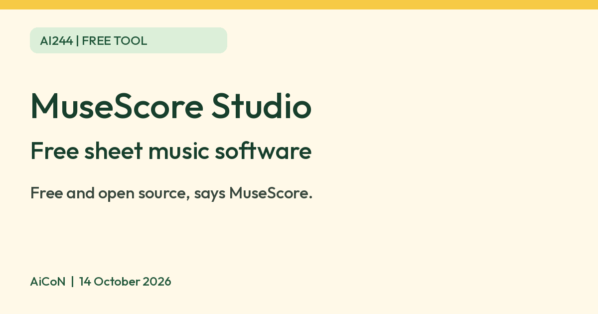

MuseScore Studio: free software to write sheet music
MuseScore says its desktop program is free and open source. It writes and plays back sheet music on Windows, macOS and Linux.

What it is
MuseScore Studio is free software for writing, playing back and printing sheet music. The musescore.org homepage calls it "Free music composition and notation software" and says people write music for piano, guitar, orchestra, jazz, choir, band and more. It is not an AI tool. We included it because it is a free tool from an official source.
Is it free?
Yes, going by the official site. The page title says "Free", and MuseScore's desktop privacy policy says "MuseScore Studio is free and open source software". A MuseScore announcement says it will remain free and open source under GPL version 3. We found no price for the desktop program on the pages we read.
Which devices
- The download page lists Windows 10 or higher and macOS 12 or higher, with a Linux AppImage for recent Linux distributions. The latest stable version it shows is 4.7.5, released 8 September 2026.
- The page describes a download through "MuseHub" and also an option "without MuseHub". We did not check what MuseHub is, what it costs, or whether it is required.
- We found no phone version on the pages we read.
Privacy and data
- The desktop privacy policy names two network features: update checking and error reporting.
- It says update checking shares your IP address and basic technical details about the program and your system, which it says it takes steps to anonymise. It says you get a clear option to turn it off in Preferences.
- It says if the program has an error, a dump file is sent to the MuseScore team, with identifiable information filtered out and the IP address discarded.
India
- We found no India-specific statement or age limit on the pages we read. The homepage says it has 69 languages. We did not check which.
Frequently asked questions
Is MuseScore free?
The desktop program is described as free and open source on the official site. The musescore.com sharing site is separate and we did not check its pricing.
Does it work on a phone?
We found no phone version on the pages we read.
Is it AI?
No. It is music notation software. We included it because it is a free tool from an official source.
Sources: MuseScore, Download, Desktop privacy policy. Checked 14 October 2026. Independent guide, not affiliated. No MuseScore logo is used.